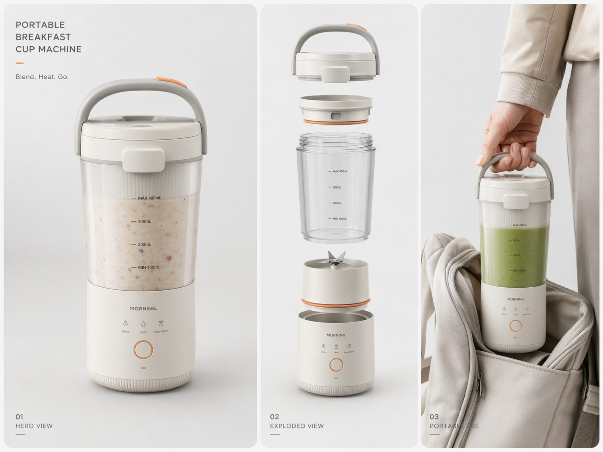
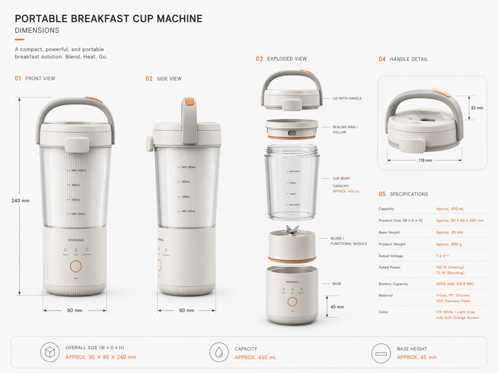
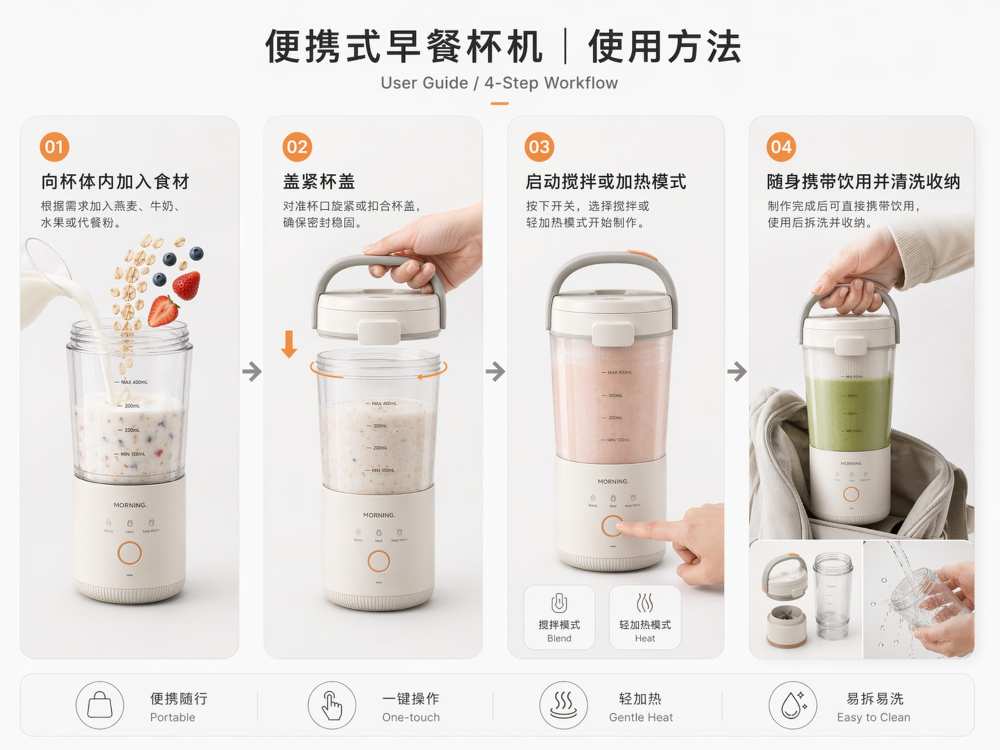
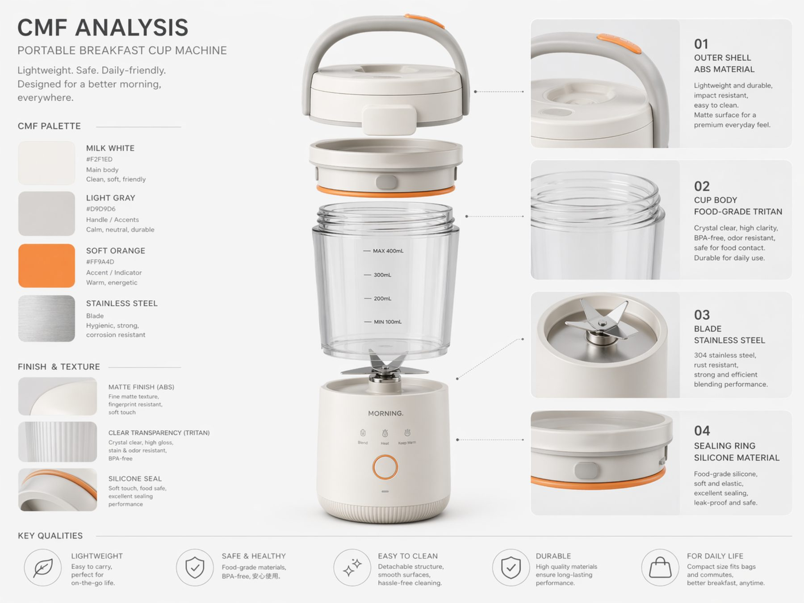
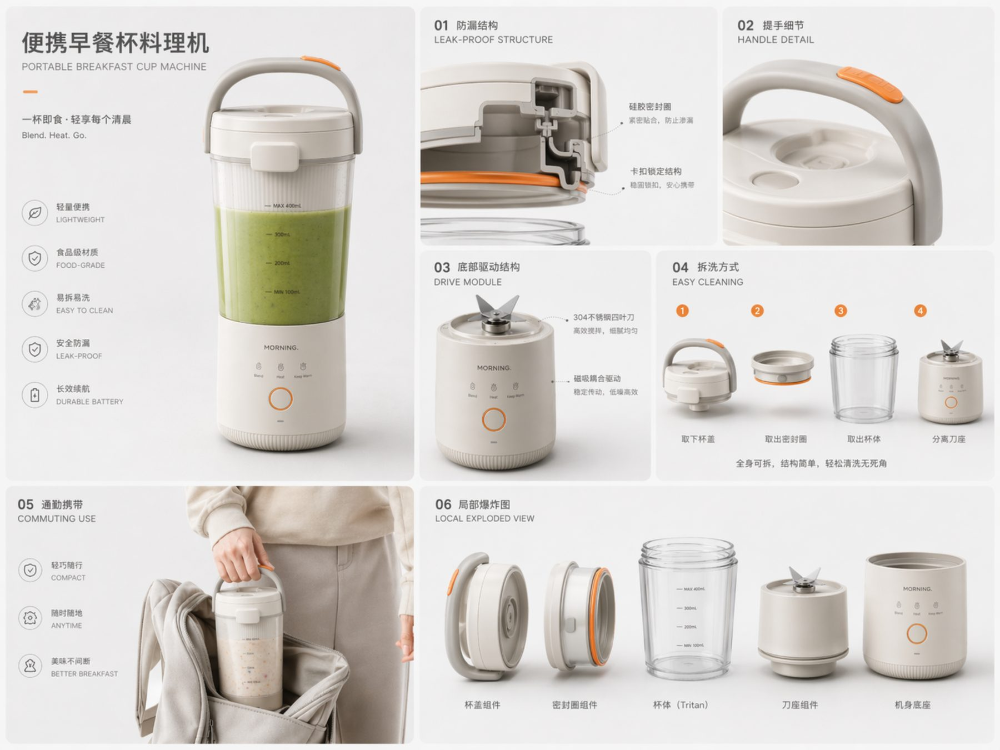

Category
Industrial Design
集搅拌、轻加热、盛装与携带于一体的便携早餐产品，为通勤与轻食场景提供更高效的一体化体验。

本项目以快节奏生活下的早餐准备痛点为出发点，将制作、饮用和携带整合到同一产品结构之中。
用户可以直接在杯体中加入燕麦、奶昔或代餐食材，完成搅拌后随手带走，减少容器切换与清洁步骤。
产品采用带提手的杯盖结构和可拆卸刀座模块，在保证便携性的同时，也保留了拆洗便利性。底部交互区以极简按钮与清晰图标组织模式切换。
材料方面以食品级 Tritan、不锈钢、ABS 和硅胶密封圈为核心，搭配柔和橙色作为识别点，营造轻巧、干净、日常化的产品气质。



